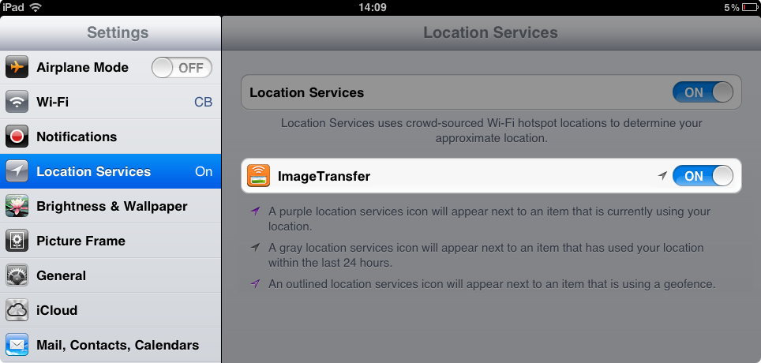

Enabling access
Please follow this guide to allow Image Transfer to read your photos:
Settings Location Services Image Transfer [ON]
1. Launch
Settings
app
2. Select
Location Services
and set
Image Transfer
switch to be turned
ON
.

Contact us for support
team@capablebits.com